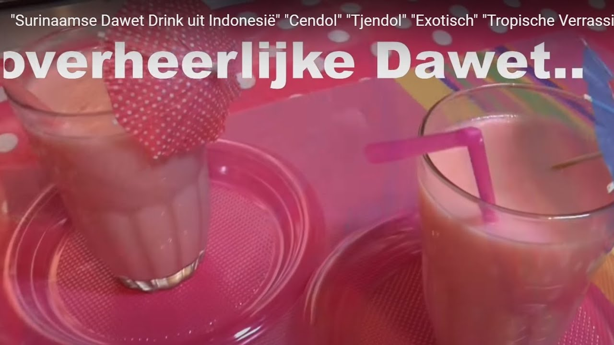

Voedzaam & Snel - Gezonde recepten die makkelijk en snel te bereiden zijn
2021.03.30 15:54

Mijn bewaarde recepten Inloggen Recepten Sappen Ontbijt Lunch Tussendoortje Salade Soep Voorgerecht Hoofdgerecht Vis Vlees Bijgerecht Dessert Paasrecepten BBQ recepten Kerstrecepten Dieet Vegetarisch Koolhydraatarm Glutenvrij Blog Boeken Gezonde weekmenu’s 50x lunchen zonder brood De 100 populairste recepten van Voedzaam & Snel Gezond leven doe je zo! Het Groene Smoothie Boek Info Onze manier van eten Over Voedzaam & Snel Eet jij voldoende groente? Nieuwsbrief aanmelden Blender kopen Media Privacyverklaring Disclaimer Contact Fotografie Menu Delen
Havermoutpap het basis recept
Ontbijt Ontbijten met havermoutpap! Het is een lekker en voedzaam ontbijt. Het is alweer een hele tijd... Lees verder Laden... mrt 22 Door Jennifer Delen
Groene smoothie met maar 3 ingrediënten
Lunch Ontbijt Sappen Een groene smoothie met maar 3 ingrediënten de foto van deze groene smoothie verklapt natuurlijk... Lees verder Laden... mrt 6 Door Sven Delen
Volkoren pita met rode biet gietenkaas en avocado
Lunch Vegetarisch It’s time to lunch! Een fijne onderbreking van de (werk)dag met deze volkoren pita belegd met... Lees verder Laden... feb 24 Door Jennifer
Spruitjes uit de oven met kaas
Bekijk hier onze nieuwste video Delen
Vegetarische goulashsoep
Hoofdgerecht Soep Veganistisch Vegetarisch Deze vegetarische goulashsoep is heerlijk! Een lekkere en verwarmende soep bomvol groente. Van deze flinke pan... Lees verder Laden... feb 17 Door Jennifer Delen
11x gezonde winter recepten
Blog It’s wintertime! En hoe, het heeft flink gesneeuwd en het blijft nog een hele week liggen... Lees verder Laden... feb 12 Door Jennifer Delen
Groene falafel met ricottadip
Tapas recepten Tussendoortje Voorgerecht Ik heb al best wel vaak verteld dat ik fan ben van de Oosterse keuken. Je... Lees verder Laden... jan 29 Door Jennifer Delen
Simpele quesadilla’s met paprika
Lunch Tapas recepten Vegetarisch Zin in een gezellige en voedzame lunch voor het hele gezin? Een lunchrecept dat niet veel... Lees verder Laden... jan 21 Door Jennifer Delen
Zandkoekjes minder suiker
Tussendoortje Zin om koekjes te bakken met je kinderen? Dit is een voedzaam recept voor zandkoekjes met... Lees verder Laden... jan 9 Door Jennifer Delen
10x gezonde kerstrecepten
Blog Kerstrecepten Kerst staat naast samen zijn met familie, in het teken van eten. Met kerst willen we... Lees verder Laden... dec 19 Door Jennifer Delen
Pizza stokbrood - snel en simpel recept - Lekker en Simpel 5 tips met recept om je makkelijkste butternutsoep te maken met het minste werk en de meeste smaak. Bonus: grootmoeder’s simpel pompensoep recept boordevol smaak! De lekkerste pompoensoep maak je met de butternut of flespompoen. Kies daarbij de lekkerste vetstof voor pompoen: boter, en succes is al verzekerd.
binnenlandse obligaties - Het Financieele Dagblad Lekkere en makkelijke recepten die ieder kan maken. Kies uit deze 5 lekkere pastinaaksoep recepten. 1: klassiek met appel volgens Jeroen Meus. 2: verrassende volgens Piet Huysentruyt. 3 + 4: nieuwe Bonus recepten van Sandra Bekkari, Of 5: lekker oosters genieten van een warme kom roomsoep.
Kinderopvang | Rijksoverheid.nl We kwamen er dus laatst achter dat we niet eens een nasi goreng recept op de site hadden staan, maar daar komt vandaag verandering in. We hebben wel een Surinaamse nasi of een nasi met bloemkoolrijst gemaakt, maar dat is toch net even anders. Nasi goreng, oftewel gebakken rijst, is door de vele kruiden rijk aan smaak.
Genoteerde beleggingsfondsen - realtime koersen Amsterdam ... Een smoothie is als brandstof die je nodig hebt om de dag door te komen. Je kunt ‘m drinken tijdens het ontbijt, lunch of avondeten voor extra energie. Laat je inspireren door onze 10 lekkerste smoothies! Een glas boordevol vitamientjes, dat geeft je vast een zeker een energieboost! Lekker, zoet en zonder schuldgevoel genieten.
Smoothies: 10 lekkere recepten voor de perfecte smoothie ... Naam *. E-mail *. Site. Mijn naam, e-mail en site bewaren in deze browser voor de volgende keer wanneer ik een reactie plaats. Wanneer je dit formulier gebruikt, ga je akkoord met de opslag en verwerking van jouw gegevens door deze website.
Voedzaam & Snel - Gezonde recepten die makkelijk en snel ... Eigen recept; Appel-banaan smoothie. Deze smoothie is heerlijk zacht en romig. De appel-banaan combinatie zorgt voor een frisse indruk. Pas op: heeft een verslavende werking:) INGREDIENTEN - 1 appel, - halve banaan, - 200 ml appelsap, - 1 theelepel kaneelpoeder ...